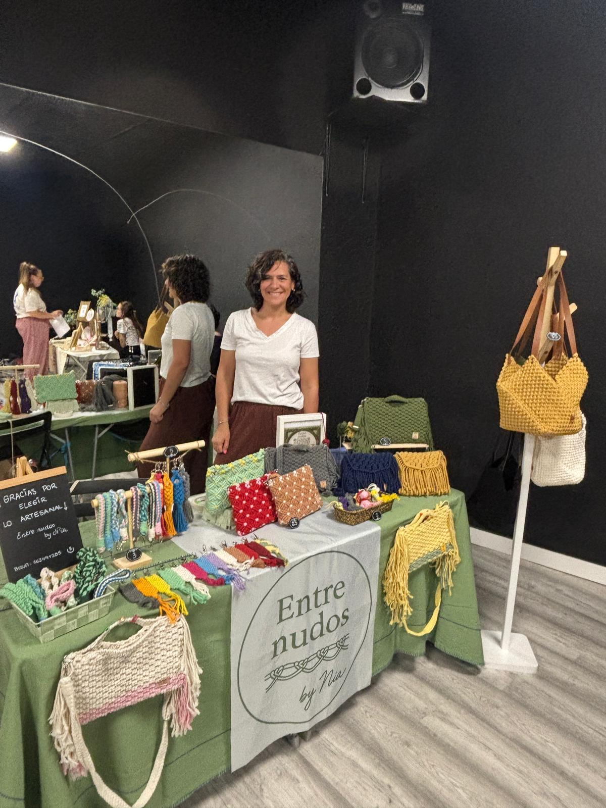

Cada nudo es un acto de meditación. Cada pieza, una conversación entre mis manos, la fibra y la intención. EntreNudos nace de una pasión simple: crear objetos bellos que conecten a las personas con la naturaleza y el arte hecho a mano.
No se trata solo de macramé. Se trata de sostenibilidad, de respetar los procesos lentos, de valorar lo hecho a mano en un mundo cada vez más acelerado.
500+
Piezas Creadas
300+
Clientes Felices
5+
Años de Pasión
Elegimos cuidadosamente algodón orgánico y yute de calidad premium. Solo lo mejor para nuestras creaciones.
Cada pieza es pensada, diseñada y planificada. Bosquejos, medidas, patrones de nudos.
Las manos toman la fibra. Horas de dedicación, meditación y precisión. Este es el corazón del proceso.
Refinamiento final, inspección de calidad y empaquetado cuidadoso. Lista para llegar a tu hogar.
Comprometidas con materiales naturales y procesos que respetan el planeta. Nada de plásticos, nada de atajos.
Cada pieza es única. No existe producción en masa. Solo creatividad, paciencia y dedicación.
Creamos objetos que conectan. Contigo, con tu espacio, con la naturaleza.
No hay atajos. Solo fibras premium, técnicas precisas y control de calidad riguroso.
Boho, moderno, clásico. Nuestros diseños respetan tradiciones pero abrazan la creatividad.
Cada cliente es parte de nuestra historia. Nos encanta escuchar, aprender, crecer juntas.